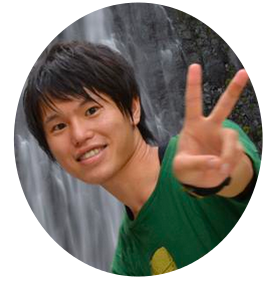

Profile

History
Publications
"Pose Estimation of Light Field Camera Based on Termporal Epipolar Constraint",
IEEE, ICCP, May, 2014
"A New Mirror-based Extrinsic Camera Calibration Using an Orthogonality Constraint",
IEEE, CVPR, June, 2012, Best Open Source Code Award Second Prize
"複数カメラ映像を用いた仮想全天球映像合成に関する検討" to appear,
電子情報通信学会技術研究報告, MVE, June, 2015
"特徴量の削減と合成に基づく低次元特徴量空間を用いたコンテンツコンプリーション" to appear,
電子情報通信学会技術研究報告, MVE, June, 2015
"眼球特性と等距離制約を用いたカメラとその視野外に存在する物体の最小構成外部キャリブレーション",
電子情報通信学会技術研究報告, MVE, Jan, 2015, MVE賞
"テレビの外側を覗き見る ～ 空間的な拡がりを考慮したセカンドスクリーンへの映像提示 ～",
電子情報通信学会技術研究報告, MVE, Jan, 2015
情報処理学会研究会資料, CVIM, Jan, 2012
電子情報通信学会技術研究報告, PRMU, Mar, 2010